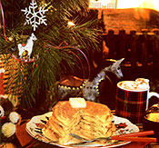

From the Alaskan goldfields comes the hearty main course for a perfect Christmas morning breakfast.
Sourdough bread is thought to have originated about six thousand years ago, when some early baker discovered that wild yeast spores, floating in the air and landing in a flour and water mixture, caused fermentation that made the dough rise. Throughout history, conserving a small amount of starter (flour, water, and live yeast) for making raised baked goods was common practice, and it's known that Columbus carried a sourdough pot on his voyages to the New World. California gold rushers were dubbed sourdoughs because of their attachment to their pots, but it was the prospectors in the Alaskan Klondike who were truly dedicated to the fermented mix. Wild yeast is dormant in cold weather, and without their precious pots, the miners would have had only hardtack to supplement their meat and fish diets throughout the long Yukon winters. Since sourdough was the basis for breads, biscuits, cakes, flapjacks, and other goodies, the prospectors guarded their starter pots with the same protectiveness as they did any gold they might find.
The key to successful sourdough cookery is to acquire and maintain a healthy starter sponge-the living, growing yeast culture. You can purchase sourdough starter from mail-order supply houses, but the fastest, most satisfying, and most economical way to obtain it is to grow your own.
To make sourdough starter from scratch, place two cups of tepid water in a plastic, glass, or earthenware bowl (metal causes a chemical reaction that can kill the yeast), mix in one yeast cake or a package of active dry yeast, then blend in two cups of unsifted all purpose flour. Cover the bowl with plastic wrap or a damp cloth and allow the blend to ferment overnight in a warm place, 85° to 95°F, stirring at least once with a nonmetallic spoon. The next morning the culture will be frothy from the carbon dioxide produced by the yeast, and the flour and water you added will have been consumed.
The starter will now be ready to bake with, but to store it for future use, refrigerate it in a covered nonmetallic container. Stir it occasionally (once a day isn't too often), and if you won't be using it for a long while, feed it once a week or so by removing and discarding about half the sponge, then stirring in a cup of flour and a cup of warm water. Let the starter ripen overnight as you did in the beginning, and with each "replenishing," the starter will grow a little healthier and a little sweeter.
If you should happen to leave your refrigerated sponge unattended for a long period of time-say, several months-it's likely to turn into a sour-smelling, slimy goop with a brownish syrup floating on top. No problem: To make up a fresh batch, simply pour off any unsavory parts, measure the creamy slurry that remains, and mix in equal amounts of flour and water (for example, a cup of starter would take one cup of flour and one cup of water). Even if you have as little as a tablespoon of usable starter, you can add a tablespoon each of flour and water, let that stand overnight, and gradually build up to the quantity required.
The rule of thumb when using a portion of the starter in a recipe is to replace that portion with equal amounts of both flour and water. Therefore, the night before you want to prepare a sourdough pancake breakfast, use the following procedure. Remove the starter from the refrigerator and measure the amount needed into a nonmetallic bowl. The recipe below calls for one cup of starter, so to this amount add one cup each of flour and tepid water. To replace the cup of starter, add another cup each of flour and water to the original container. Cover the containers loosely, and let both sponges ferment overnight in a warm place. The next morning, return the original starter to the refrigerator; the second batch of sponge will now equal about two cups and will be ready to be made into light, delicious pancakes.
The recipe that follows makes about 20 medium-sized flapjacks.
2 cups of sourdough sponge (prepared the night before from 1 cup of starter, 1 cup of flour, and 1 cup of tepid water as described above)
2 eggs
1 tablespoon of sugar (or 1 tablespoon of honey)
1/2 teaspoon of salt
1 teaspoon of baking soda
1-1/2 teaspoons of tepid water.
Separate the eggs, placing the yolks in one bowl and the whites in another. Beat the whites until they're fluffy, then fold in the sugar or honey. Beat the yolks lightly and add the salt. Now stir the sourdough sponge into the egg yolks, then gently fold in the beaten egg whites. Finally, mix the baking soda with the water and blend this into the batter by hand.
Drop the batter by large spoonfuls onto a well-greased, preheated (medium-hot) griddle-or use a seasoned cast-iron frying pan. Cook the pancakes until they are golden brown on both sides, flipping them only once, when the tops are full of bubbles.
These sourdough pancakes are so light and luscious that they disappear in a hurry. To serve additional people, I usually add an extra egg per person and increase the other ingredients accordingly. If the batter is too thick, I add a bit more water or milk. And if a test cake tastes strong or sour, I just sweeten the batter by adding a pinch more baking soda.
You might also want to try serving blueberry sourdough pancakes. Simply make the basic recipe, and right before cooking, gently fold about a cup of fresh or frozen blueberries into the batter.
As you can see, for all the mystery that surrounds it, cooking with sourdough is really a piece of (pan) cake. And once you get the foregoing recipe fine-tuned to your family's tastes, I'm sure you'll agree that the real treasure to come out of the Alaskan gold rush wasn't the yellow metal the hardy (and hungry) miners dug from the earth, but rather, the delicious, durable pancake and baking mix they popularized.
EDITOR'S NOTE:
For a wealth of sourdough lore (including methods for brewing starter by trapping wild yeast), as well as recipes for sourdough bread, biscuits, cakes, muffins, and variations on the pancake recipe described above, see the articles "Sourdough!" and "More Sourdough!" in MOTHER N0. 11, and "Foraging for Wild Yeast" in MOTHER NO. 65. For information on ordering these and other back issues, turn to page 132.
|
 |
|
|